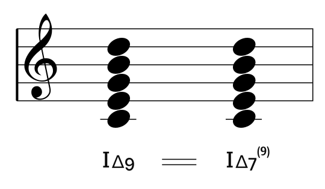
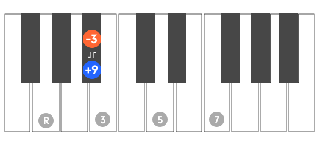

这一期是“掌握全新和弦名称”的一讲。
在第III章中，我们介绍了叠加了大九度的“九和弦（9th Chord）”。在本讲中，我们将把除九度之外其他音符的附加层级全面进行理论化构建。
[gt_radar_chart id=”gt-radar-genrechart” width=”” height=”240″ labels=”J-Pop,Jazz,Classic,Cinematic,Electronic,Pop,Rock” animation_type=”radarar”][gt_chart_data fill_color=”#2060db” stroke_color=”#2060db” data=”40,100,70,80,10,20,00″][/gt_radar_chart]
在第III章末尾，我们详解了“九和弦”——即在七和弦之上继续向上叠加大九度（即根音上方）的音。

然而，能够继续往上追加的音符远不止于此。在本文中，我们将对这些延伸附加音展开一揽子理论化梳理。
 1. 引申音的标记法
1. 引申音的标记法
其实道理非常简单质朴。从三和弦、七和弦、九和弦开始继续三度叠置，数字便以每次加2的规律递增，形成十一和弦（Eleventh Chord）与十三和弦（Thirteenth Chord）。

像这样，在突破七音之后，通过不断三度叠置而衍生出的9th、11th、13th等附加音，被称为引申音（Tension / 延伸音）。而拥有引申音的和弦，则统称为引申和弦（Tension Chord）。
9th、11th、13th若折叠在一个八度内思考，本质上无非对应着2、4、6度；但遵循“纵向三度持续叠置诞生”的理论逻辑，传统上统一称为“11度”与“13度”。如果在计算度数时一时转不过弯来，只要把数字减去7，就能对应回熟悉的音阶度数。
引申音的记法规范
像“I9”、“V13”这种和弦代号虽然自古典音乐时期便已存在，但从严密性来看却是一套相当不完备的体系。例如，它无法应对“叠加了13th却故意不叠11th”、或者“同为4度音，却使用了临时记号将其升高为”等诸多细腻的变体场景。

为了更加系统化且富有弹性地驾驭各种引申音，爵士乐理论在后世构想出了如下这套精巧的记法规范：

首先，七和弦及以内的信息照常记录；随后，**将所叠加的所有引申音以小字形式罗列在和弦代号的右上角。**如此一来，诸如“同为4度，若是增4度就明确记作♯11”等细致入微的精确音程（详细度数）便能得到清晰区分。
右上角的罗列既有“纵向垂直叠放”，也有“水平横向排列”，为了增强可读性，还可以用括号括起来。此外，升降号（♯/♭）也可以用正负号（+/-）来表示。

由于伯克利音乐学院（Berklee）体系普遍采用这种“横向排列 + 括号”的形式，这大概是当今业内流传最广的主流记法。
仔细想想，传统的“变为九和弦时直接把7改成9”的记法确实略显曲折隐晦，数字7凭空消失难免容易让人混淆。纵观各派理论专著，有的仅在叠加“♯11”这类特殊引申音时才动用角标，有的则从头到尾一律采用这种“右上角标法”。本网站大体统一采用“右上角标法”，在升降号上也基本以正负号（+/-）来表述。
2. 引申音与详细精确度数
仅就粗略简易度数而言，引申音只有9th、11th、13th这3大类。

上图是以V7和弦为例。然而正如前文所见，“同为4度，亦有纯4度与增4度之别”，从精确度数（详细音程）层面审视，其种类要丰富得多。接下来我们逐一确认各精确度数引申音的记法。
9度引申音
首先是9度的各种变体。在第III章学习的九和弦叠加的是“大9度”。在我们这套“右上角标法”中，只要单纯写上“9”，指代的就是“大9度”。


+9与-9
将这个“大9度”按上下移动，便能获得“增9度”与“小9度”引申音。

若将其折叠回单八度内描述：在根音上方叠加“小2度”即为-9th引申音（♭9）；叠加“增2度”即为+9th引申音（♯9）。
11度引申音
在和弦代号中单纯标注“11”时，它指代的是“纯4度（纯11度）”。

也就是说，11th所使用的音与挂四（sus4）和弦完全相同。那么它与sus4的区别究竟何在呢？观察上面的键盘便一目了然：引申音并非把音“替换挪移”，而是“额外追加叠加”，因此和弦原有的三音（3rd）依然完好无损地存在着。
+11与-11
若比纯11度再升高半音，即为“增4度（增11度）”，被称为+11th引申音（♯11）。反之，若试图把纯4度降低半音，就会直接撞入侵占大三度（3rd）的和弦音领地，因此并不存在所谓的“-11th”引申音。

13度引申音
在和弦代号中单纯标注“13”时，它指代的是“大6度（大13度）”。

也就是说，13th所使用的音与六和弦（6th Chord）完全相同。有人可能会想：“那为什么不直接写6呢？”其原因在于：当我们在完整的七和弦基础之上还想继续追加六度音时，原本数字“6”该写的位置已被“7”霸占了，因此必须在右上角标注为13。

+13与-13
若比大13度降低半音，即为“小6度（小13度）”，被称为-13th引申音（♭13）。反之，若试图将其再升高半音，就会直接撞击侵入七音（7th）的领地，因此通常也不存在所谓的“+13th”引申音。

至此，全部可能存在的引申音已被我们尽数网罗囊括。
3. 七大引申音与等音关系
除开被判定为“不存在”的音，常规体系中总共存在着7种引申音[1]。

虽然符号猛增，但落实到具体声音上，真正前所未见的陌生音响其实相当有限。例如11th与sus4如出一辙，13th则与六和弦异曲同工。
+11、-13与五音的等音关系
进一步审视就会发现，+11th与-13th恰好位于五音（5th）的上下半音位置，因此它们分别与降五度（♭5）及升五度（♯5）互为等音。

这与sus4的道理一样，两者虽然在逻辑上区分为“替换原本的音”还是“额外追加叠加”，但在实际声响质感上却高度孪生相似。

+9与小三度的等音关系
此外，仔细打量+9th（♯9）音，它在音高上完全等同于小和弦的小三度（m3）。


因此+9th在实际应用中往往指代“将小三度音硬砸在大三度骨架上产生的声响碰撞”（著名的亨德里克斯和弦即为此理）。其中最经典的实战应用，是针对通过“品质改变”催生出的III7和弦，反手砸上一个还原Sol音，以此形成变音的“还原抵消”。
IVΔ7(9) III7(+9) VIm7 I7
在III7和弦上叠置Sol♮自然音，其和弦名称正是III7(+9)。
围绕这些等音的记法辨析虽然十分错综复杂，诸如“在何种语境下该用哪种记法”有着严苛的流派规矩，但现阶段大家完全不必为此徒增烦恼，树立“无论写成哪种在听觉上均无大碍”的豁达认知即可。当下最要紧的任务是准确厘清每一个符号代表距离根音几度的音程。
归纳起来，“引申和弦”中的绝大多数成员，都能在第III章之前学过的经典技法中找到血脉相通的近亲：
| 引申音 | 音程换算 | 近似角色 |
|---|---|---|
| 9 | 大2度（M2） | sus2 |
| 11 | 纯4度（P4） | sus4 |
| 13 | 大6度（M6） | 六和弦（6th Chord） |
| ♯9 | 小3度（m3） | 抵消变音的和声冲突 |
| ♭9 | – | （独一无二无重叠！） |
| ♯11 | 减5度（♭5） | 降五和弦（Flat Five） |
| ♭13 | 增5度（♯5） | 增五和弦（Sharp Five） |
只不过此前学过的技法大多是对原有声部进行“移位替换”，而引申和弦则是硬性“追加叠加”，因此声音的浑浊度与丰富度显著拔高，属于更偏向进阶高阶玩家的兵器。
4. 自然音阶和弦的引申音分布
引申音的名称标记严格由其精确度数裁定。这与我们迄今为止学过的命名法逻辑一脉相承。在初学“七和弦”时，辨析大七度与小七度曾是一道门槛；引申音亦然：即便在五线谱上只是极为朴素地重复三度堆叠，在不同根音上衍生出的引申音精确度数却千差万别。

这是在各级自然音阶和弦上分别一路叠置到13度时所呈现的完整和弦代号。有的和弦头上挂着加号（升），有的和弦头上挂着减号（降）。 如果乐手必须完全依据此类和弦谱即兴视奏，就必须在电光石火间将这些繁琐的数字符号在指尖还原为物理琴键，难度确实非同小可。
但反过来说，如果你并不需要去干这种现场极限视奏的硬核差事，就完全没有必要开启死记硬背引申音谱系的修行。正如背诵详细音程一样，“机械死记”是最吃力不讨好的学习模式。遵循“从自己最心动的声音开始，将听觉质感、使用情境与数字标记深度绑定”的路径逐步消化，才是最科学高效的吸收方式。
本讲厘清了标记体系的来龙去脉，下一讲我们将正式挺进“究竟哪些引申音在实战中更好用”的实操研习。
总结
- 引申音共有9、♭9、♯9、11、♯11、13、♭13共计7种。
- 请特别注意：引申音代号上的♯/♭是指相对于大音程/纯音程的升降偏移，与乐谱调号上的升降号绝非一回事。
- 记写和弦代号时，将引申音清晰罗列在右上角。
- 唯独在严格按9、11、13自然音阶顺序顺次堆叠且不含任何升降引申音时，才允许简写为“C11”、“Dm13”等形态。